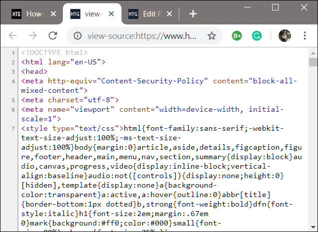

Genesis Bernadin
DIG 245 View Source
Instructions on Viewing Source Code
- First, select web browser and enter web address into space bar. In other
words, open Googlechrome and type "newyorktimes.com" into address bar.
- Next, right click your mouse until a drop down menu appears.
- Select inspect. Then, your web page's source code should appear.

Interesting Ways to Peel Behind the Curtain
Implementing DevTools
- Expedite your computing needs and use the many keyboard shortcuts! For
example, "command+option+j" opens up the command panel :)
- To experiment with the display characteristics on a page, right click an
element, scroll to styles, and edit the user agent stylesheet to change the
background color (e.g change white to black).
- One way to make largescale edits on a page is through the "Sources" tab,
whereby a user can change the background color of the body of a text by
simply typing in the filesystem.
- Lastly, utilize the console tab to write hidden messages in Javascript!

How to find Digital Easter Eggs
- Now, that you know the basics, use the 'inspect' function on one of your
favorite websites and check to see if the web developer left a secret message.
- For example, the Medium humorously rewards users for discovering their
console by providing a link to their job posting website.
- Practice this skill by selecting the image below.